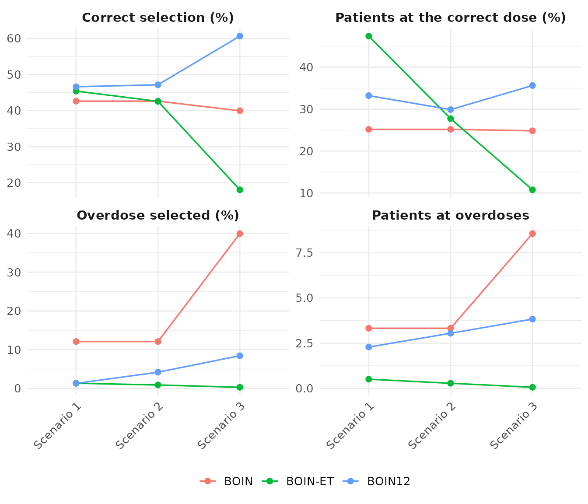

Utility-based dose finding: BOIN12 and its extensions
Source:vignettes/simFastBOIN-boin12.Rmd
simFastBOIN-boin12.RmdA utility of the response and the toxicity
The BOIN12 design of Lin, Zhou, Yan, Li and Yuan (2020) looks for the
optimal biological dose (OBD) by scoring the four outcomes a patient can
have. A response without a dose-limiting toxicity (DLT) scores 100 and a
DLT without a response 0; a patient with neither scores
psi00 and a patient with both psi11, 40 and 60
by default. The utility of a dose is the expected score of its patients.
After each cohort, the boundaries of the BOIN design rule out an
escalation from a dose that looks too toxic, and the next cohort goes to
the most desirable dose among the current dose and its neighbors, the
desirability being the posterior probability that the utility of the
dose exceeds a benchmark. At the end of the trial the OBD is the
admissible dose, up to the estimated MTD, with the highest estimated
utility.
The package provides four designs of this family:
-
BOIN12 (Lin et al., 2020):
sim_boin12()andsim_boin12_multi(); -
TITE-BOIN12 (Zhou et al., 2022), which treats new
patients while the DLT or the response of earlier ones is still pending:
sim_tite_boin12()andsim_tite_boin12_multi(); -
Comb-BOIN12 (Lu et al., 2025), for two drugs given
together:
sim_comb_boin12()andsim_comb_boin12_multi(); -
TITE-Comb-BOIN12 (Lu et al., 2025), its
time-to-event version:
sim_tite_comb_boin12()andsim_tite_comb_boin12_multi().
The U-BOIN design of Zhou, Lee and Yuan (2019), which also scores the
four outcomes of a patient by a utility but runs the BOIN design until a
dose has enough patients, is described in its own section below:
sim_uboin() and sim_uboin_multi().
The trials and the selection of the OBD run in C++. In these
functions target is the highest acceptable DLT rate and
target_resp the lowest acceptable response rate. The
target_resp of the BOIN-ET functions,
vignette("simFastBOIN-boin-et"), is a different quantity,
the response rate that BOIN-ET aims at.
The desirability score table
boin12_decision_table() tabulates, for every number of
patients, DLTs and responses at a dose, whether the dose is admissible
and the rank of its desirability among the outcomes of the table, the
score of Table 3 of Lin et al. (2020).
tab <- boin12_decision_table(target = 0.35, target_resp = 0.25)
tab_3 <- as.data.frame(tab)[tab$n == 3, ]
tab_3[, c("n", "n_tox", "n_resp", "admissible", "score")]
#> n n_tox n_resp admissible score
#> 2 3 0 0 TRUE 35
#> 3 3 0 1 TRUE 55
#> 4 3 0 2 TRUE 76
#> 5 3 0 3 TRUE 91
#> 6 3 1 0 TRUE 24
#> 7 3 1 1 TRUE 44
#> 8 3 1 2 TRUE 63
#> 9 3 1 3 TRUE 80
#> 10 3 2 0 TRUE 13
#> 11 3 2 1 TRUE 31
#> 12 3 2 2 TRUE 48
#> 13 3 2 3 TRUE 69
#> 14 3 3 0 FALSE NA
#> 15 3 3 1 FALSE NA
#> 16 3 3 2 FALSE NA
#> 17 3 3 3 FALSE NAWith the default numbers of patients, 0, 3, 6 and 9, the table has 166 rows, the cells of Table 3 of Lin et al. (2020); the lines above are those for three patients. A higher score means a more desirable dose, and only the order of the scores of the doses compared matters for the next cohort. With three DLTs among three patients the dose is inadmissible whatever the responses: under a uniform prior, the posterior probability that its DLT rate exceeds 0.35 is then 0.985, above the cutoff 0.95.
Operating characteristics for one scenario
Scenario 1 of Lin et al. (2020) has five doses, an upper DLT limit of
0.35, a lower response limit of 0.25 and twelve cohorts of three
patients. oc_scenarios() gives the true utility of every
dose and the true MTD and OBD.
p_true <- c(0.05, 0.12, 0.27, 0.35, 0.50)
p_resp <- c(0.20, 0.35, 0.36, 0.37, 0.38)
truth_1 <- oc_scenarios(list("Scenario 1" = list(p_true = p_true,
p_resp = p_resp)),
target = 0.35, target_resp = 0.25)
truth_1
#> True scenarios: 1 scenario(s), 5 doses
#> True MTD: DLT probability closest to 0.35
#> True OBD: highest utility among the doses with DLT probability <= 0.35 and response probability >= 0.25
#> Utilities: 100 (response, no DLT), 40 (neither), 60 (both), 0 (DLT, no response)
#>
#> Scenario 1
#> 1 2 3 4 5
#> p_true 0.05 0.12 0.27 0.35 0.50
#> p_resp 0.20 0.35 0.36 0.37 0.38
#> utility 50.0 56.2 50.8 48.2 42.8
#> true MTD *
#> true OBD *The response rate hardly increases beyond dose 2 while the DLT rate does, so the OBD, dose 2, is well below the MTD, dose 4.
oc <- sim_boin12(target = 0.35, target_resp = 0.25, p_true = p_true,
p_resp = p_resp, n_cohort = 12, cohort_size = 3,
n_trials = 2000, seed = 123)
oc
#> BOIN12 operating characteristics
#> DLT limit : 0.35
#> response limit : 0.25
#> trials : 2000
#> cohorts : 12 of size 3
#> max sample size : 36
#> lambda_e / lambda_d : 0.2763 / 0.4189
#> utility scores : 100, 40, 60, 0; benchmark 70.5
#> ties / no candidate : higher / nearest
#> exploration from : any
#> OBD selection : utility by posterior_mean
#>
#> DL1 DL2 DL3 DL4 DL5 Total / No OBD
#> True DLT rate (%) 5.0 12.0 27.0 35.0 50.0
#> True response rate (%) 20.0 35.0 36.0 37.0 38.0
#> OBD selected (%) 21.4 46.6 21.4 9.2 1.3 0.0
#> Patients treated 7.7 12.0 8.5 5.6 2.3 36.0
#> Patients with DLT 0.4 1.5 2.2 1.9 1.2 7.2
#> Patients with response 1.6 4.1 3.1 2.1 0.9 11.7
#>
#> Trials stopped early: 0%Dose 2 is selected most often, in 46.6 percent of the trials, and 0 percent of the trials select no OBD.
The rules of the simulations of the article
The defaults follow the BOIN12 software. Three arguments select the
rules under which Lin et al. (2020) simulated the design, where they
differ: tie_break = "random" breaks ties of desirability at
random instead of choosing the higher dose,
no_candidate = "stop" ends the trial without an OBD when no
dose allowed for the next cohort is admissible instead of going to the
nearest admissible dose, and explore_from = "admissible"
applies the rule that escalates after 9 patients when the next dose is
untried only at an admissible dose. The article states the first; the
other two are not written in it and were inferred from the published
results, which they reproduce (see the last section).
oc_article <- sim_boin12(target = 0.35, target_resp = 0.25, p_true = p_true,
p_resp = p_resp, n_cohort = 12, cohort_size = 3,
n_trials = 2000, tie_break = "random",
no_candidate = "stop", explore_from = "admissible",
seed = 123)
selection <- rbind(default = c(oc$sel_percent, oc$percent_no_obd),
article = c(oc_article$sel_percent,
oc_article$percent_no_obd))
colnames(selection) <- c(paste0("DL", 1:5), "None")
round(selection, 1)
#> DL1 DL2 DL3 DL4 DL5 None
#> default 21.4 46.6 21.4 9.2 1.3 0.0
#> article 19.4 47.5 21.3 9.6 1.8 0.3TITE-BOIN12
When the DLT and the response take long to assess, TITE-BOIN12 (Zhou
et al., 2022) treats new patients while earlier ones are still followed.
A pending outcome is replaced by its expectation given the time
followed, as in Equation (11) of the article
(pending_estimate = "conditional", the default);
pending_estimate = "marginal" replaces it by the estimated
rate itself, which reproduces the desirabilities of Table S.3 of their
Supplement. While fewer than half of the patients at the current dose
have finished both assessments, the next decision waits
(min_completed_share = 0.5). The simulations of the article
have windows of 45 days for the DLT and 60 days for the response and
three patients a month; the unit of time is the day.
tite <- sim_tite_boin12(target = 0.35, target_resp = 0.25, p_true = p_true,
p_resp = p_resp, n_cohort = 12, cohort_size = 3,
window = 45, resp_window = 60, accrual_rate = 3 / 30,
n_trials = 2000, seed = 123)
tite
#> TITE-BOIN12 operating characteristics
#> DLT limit : 0.35
#> response limit : 0.25
#> trials : 2000
#> cohorts : 12 of size 3
#> max sample size : 36
#> lambda_e / lambda_d : 0.2763 / 0.4189
#> utility scores : 100, 40, 60, 0; benchmark 70.5
#> ties / no candidate : higher / nearest
#> exploration from : any
#> OBD selection : utility by posterior_mean
#>
#> DL1 DL2 DL3 DL4 DL5 Total / No OBD
#> True DLT rate (%) 5.0 12.0 27.0 35.0 50.0
#> True response rate (%) 20.0 35.0 36.0 37.0 38.0
#> OBD selected (%) 18.1 47.2 21.3 11.1 2.1 0.1
#> Patients treated 7.4 12.1 8.4 5.5 2.5 36.0
#> Patients with DLT 0.4 1.4 2.2 1.9 1.2 7.2
#> Patients with response 1.5 4.3 3.0 2.0 0.9 11.7
#>
#> Trials stopped early: 0.1%
#> Average trial duration: 563When every decision waits for all the outcomes and the patients arrive at fixed intervals, the trials are those of BOIN12 with the same seed, and only the time differs.
wait <- sim_tite_boin12(target = 0.35, target_resp = 0.25, p_true = p_true,
p_resp = p_resp, n_cohort = 12, cohort_size = 3,
window = 45, resp_window = 60, accrual_rate = 3 / 30,
accrual = "fixed", min_completed_share = 1,
n_trials = 2000, seed = 123)
all.equal(wait$sel_percent, oc$sel_percent)
#> [1] TRUE
round(c(TITE = tite$duration, wait = wait$duration) / 30, 1)
#> TITE wait
#> 18.8 30.6The trials last 18.8 months on average with TITE-BOIN12 and 30.6 months when every decision waits.
Comb-BOIN12 and TITE-Comb-BOIN12
Comb-BOIN12 (Lu et al., 2025) applies the utility, the desirability
and the admissibility of BOIN12 to a matrix of combinations of two
drugs, with the levels of drug A in the rows and those of drug B in the
columns. The next cohort goes to a combination chosen by the
desirability among the current one and its neighbors along both drugs,
as BOIN12 does along the doses. At the end the response rates are
estimated by a quadratic logistic model, and the admissible combination
with the highest utility up to the MTD combination is selected. The
utility of the article, pE - wT * pT, is that of BOIN12
with psi00 = 100 * wT / (1 + wT) and
psi11 = 100 / (1 + wT), and the weight w_u of
its benchmark is benchmark_weight. Scenario 16 of the
article has two levels of drug A and three of drug B.
p_true_ab <- matrix(c(0.05, 0.10, 0.15, 0.15, 0.20, 0.45), nrow = 2)
p_resp_ab <- matrix(c(0.10, 0.20, 0.30, 0.40, 0.50, 0.60), nrow = 2)
comb_design <- list(target = 0.33, target_resp = 0.2, p_true = p_true_ab,
p_resp = p_resp_ab, n_cohort = 14, cohort_size = 3,
psi00 = 100 * 0.11 / 1.11, psi11 = 100 / 1.11,
benchmark_weight = 0.6, extrasafe = TRUE, offset = 0.10,
n_trials = 1000, seed = 123)
oc_comb <- do.call(sim_comb_boin12, comb_design)
oc_comb
#> Comb-BOIN12 operating characteristics
#> DLT limit : 0.33
#> response limit : 0.2
#> dose levels : 2 of drug A, 3 of drug B
#> trials : 1000
#> cohorts : 14 of size 3
#> max sample size : 42
#> lambda_e / lambda_d : 0.2604 / 0.3947
#> utility scores : 100, 9.9099, 90.0901, 0; benchmark 54.79
#> ties / no candidate : higher / nearest
#> OBD selection : logistic response, rectangle bound
#>
#> Item Drug A B1 B2 B3
#> True DLT rate (%) A1 5.0 15.0 20.0
#> A2 10.0 15.0 45.0
#> True response rate (%) A1 10.0 30.0 50.0
#> A2 20.0 40.0 60.0
#> OBD selected (%) A1 5.3 13.1 36.6
#> A2 3.0 25.2 15.8
#> Patients treated A1 4.0 5.7 11.3
#> A2 3.4 9.1 8.2
#> Patients with DLT A1 0.2 0.9 2.3
#> A2 0.3 1.4 3.7
#> Patients with response A1 0.4 1.7 5.6
#> A2 0.7 3.7 4.9
#>
#> No OBD selected : 1%
#> Trials stopped early : 1%
#> Average number of patients : 41.6
#>
#> True OBD (highest true utility) : A1B3
#> Selected as the OBD : 36.6%
#> Patients treated there : 27.2%
#> Combinations above the DLT limit : 1 of 6
#> Selected as the OBD : 15.8%
#> Patients treated there : 19.6%The true OBD combination is A1B3, and it is selected in 36.6 percent of the trials.
The article states that the OBD combination is chosen among the
combinations up to the levels of both drugs of the MTD combination
(obd_bound = "rectangle", the default). The published
selection percentages agree better with candidates bounded, at every
level of drug B, by the MTD along drug A
(obd_bound = "contour"), a rule inferred from the published
results. The same trials give
oc_contour <- do.call(sim_comb_boin12,
c(comb_design, list(obd_bound = "contour")))
labels <- paste0("A", rep(1:2, 3), "B", rep(1:3, each = 2))
bounds <- rbind(rectangle = as.vector(oc_comb$sel_percent),
contour = as.vector(oc_contour$sel_percent))
colnames(bounds) <- labels
round(bounds, 1)
#> A1B1 A2B1 A1B2 A2B2 A1B3 A2B3
#> rectangle 5.3 3.0 13.1 25.2 36.6 15.8
#> contour 1.0 2.5 4.0 23.0 48.3 20.2TITE-Comb-BOIN12 applies the rules of Comb-BOIN12 at the decision
times of TITE-BOIN12. By default the pending outcomes count in the DLT
rate of the decision, in the admissibility and in the utility, as in
TITE-BOIN12; Sections 2.2 and 3.1 of Lu et al. (2025) state that they
count in the utility only, the decision and the admissibility using the
observed outcomes (pending_use = "utility"). The article
does not describe the accrual or the waiting rule, for which the package
uses those of TITE-BOIN12. One of the settings of Figure 2 of the
article has windows of one month for the DLT and two months for the
response and two patients a month, here with uniform times to the
events, as Section 2.2 of the article assumes:
tite_comb_design <- c(comb_design[names(comb_design) != "n_trials"],
list(window = 1, resp_window = 2, accrual_rate = 2,
event_time = "uniform", n_trials = 500))
oc_tc <- do.call(sim_tite_comb_boin12, tite_comb_design)
oc_tc_utility <- do.call(sim_tite_comb_boin12,
c(tite_comb_design, list(pending_use = "utility")))
pending <- rbind(all = c(as.vector(oc_tc$sel_percent), oc_tc$duration),
utility = c(as.vector(oc_tc_utility$sel_percent),
oc_tc_utility$duration))
colnames(pending) <- c(labels, "Months")
round(pending, 1)
#> A1B1 A2B1 A1B2 A2B2 A1B3 A2B3 Months
#> all 3.2 2.6 12.0 26.2 38.0 17.8 26.2
#> utility 2.8 3.0 16.2 27.2 37.2 12.8 26.0U-BOIN
U-BOIN (Zhou, Lee and Yuan, 2019) scores the four outcomes of a
patient as BOIN12 does, with the utilities utility of (no
response, DLT), (no response, no DLT), (response, DLT) and (response, no
DLT), by default 0, 30, 50 and 100, example 1 of the article. Its
posterior mean utility weights them by the posterior means of the
probabilities of the four outcomes under the Dirichlet(1/4, 1/4, 1/4,
1/4) prior of the article. The trial has two stages. Stage I runs as the
BOIN design with the target tox_upper - 0.05, and a dose
with too many DLTs is eliminated with every higher dose. Once a dose has
n_stage1 patients, 12 by default, stage II begins: the next
cohort escalates above the highest dose tried while the DLT rate
observed there is at most the escalation boundary, and otherwise goes to
the admissible dose with the largest posterior mean utility. A dose is
admissible when it has been tried, is not eliminated, and is neither
toxic, when the posterior probability that its DLT rate exceeds
tox_upper is above cutoff_eli (0.95), nor
futile, when the posterior probability that its response rate is below
resp_lower is above cutoff_eli_resp (0.90). At
the end of the trial the OBD is the admissible dose with the largest
posterior mean utility. tox_upper and
resp_lower play the parts of target and
target_resp of BOIN12.
uboin_utility_table() gives, for a number of patients,
the posterior mean utility and the admissibility of a dose for every
outcome of its patients, the decision tables of the supporting
information of the article.
ut <- uboin_utility_table(3, tox_upper = 0.30, resp_lower = 0.20)
ut
#> n_resp n_tox n_resp_no_tox utility toxic futile admissible
#> 1 0 0 0 33.75 FALSE FALSE TRUE
#> 2 0 1 0 26.25 FALSE FALSE TRUE
#> 3 0 2 0 18.75 FALSE FALSE TRUE
#> 4 0 3 0 11.25 TRUE FALSE FALSE
#> 5 1 0 1 51.25 FALSE FALSE TRUE
#> 6 1 1 0 38.75 FALSE FALSE TRUE
#> 7 1 1 1 43.75 FALSE FALSE TRUE
#> 8 1 2 0 31.25 FALSE FALSE TRUE
#> 9 1 2 1 36.25 FALSE FALSE TRUE
#> 10 1 3 0 23.75 TRUE FALSE FALSE
#> 11 2 0 2 68.75 FALSE FALSE TRUE
#> 12 2 1 1 56.25 FALSE FALSE TRUE
#> 13 2 1 2 61.25 FALSE FALSE TRUE
#> 14 2 2 0 43.75 FALSE FALSE TRUE
#> 15 2 2 1 48.75 FALSE FALSE TRUE
#> 16 2 3 0 36.25 TRUE FALSE FALSE
#> 17 3 0 3 86.25 FALSE FALSE TRUE
#> 18 3 1 2 73.75 FALSE FALSE TRUE
#> 19 3 2 1 61.25 FALSE FALSE TRUE
#> 20 3 3 0 48.75 TRUE FALSE FALSEFor three patients the table has 20 rows. The article does not give
the priors of its toxicity and futility rules. Beta(1, 1) priors, the
defaults (prior_tox and prior_resp), reproduce
its simulations. Its Tables S4 to S6 mark a dose without any response
inadmissible, which prior_resp = c(0.05, 0.05) reproduces
and the default does not; for three patients and the utilities of those
tables, the two priors differ on these outcomes:
s4 <- uboin_utility_table(3, tox_upper = 0.30, resp_lower = 0.20,
utility = c(0, 15, 25, 100),
prior_resp = c(0.05, 0.05))
s4_default <- uboin_utility_table(3, tox_upper = 0.30, resp_lower = 0.20,
utility = c(0, 15, 25, 100))
s4[s4$admissible != s4_default$admissible, ]
#> n_resp n_tox n_resp_no_tox utility toxic futile admissible
#> 1 0 0 0 20.00 FALSE TRUE FALSE
#> 2 0 1 0 16.25 FALSE TRUE FALSE
#> 3 0 2 0 12.50 FALSE TRUE FALSEScenario 1 of Simulation A of the article has five doses, 54 patients
in cohorts of three, and the DLT and the response of a patient joined by
the Gumbel model with the association parameter 0.2
(resp_assoc).
oc_u <- sim_uboin(tox_upper = 0.30, resp_lower = 0.20,
p_true = c(0.02, 0.15, 0.30, 0.45, 0.60),
p_resp = c(0.20, 0.65, 0.65, 0.65, 0.65),
n_cohort = 18, cohort_size = 3, resp_assoc = 0.2,
n_trials = 2000, seed = 123)
oc_u
#> U-BOIN operating characteristics
#> DLT upper limit : 0.3
#> response lower limit : 0.2
#> stage I target : 0.25
#> trials : 2000
#> cohorts : 18 of size 3
#> max sample size : 54
#> stage II from / stop : 12 / 54 patients at a dose
#> lambda_e / lambda_d : 0.1968 / 0.2984
#> utilities : 0, 30, 50, 100
#> cutoffs (DLT / resp) : 0.95 / 0.9
#>
#> DL1 DL2 DL3 DL4 DL5 Total / No OBD
#> True DLT rate (%) 2.0 15.0 30.0 45.0 60.0
#> True response rate (%) 20.0 65.0 65.0 65.0 65.0
#> True utility 43.3 69.0 62.5 56.0 49.6
#> OBD selected (%) 1.8 75.0 20.7 2.1 0.2 0.0
#> Patients treated 6.2 30.4 13.4 3.4 0.5 54.0
#> Patients with DLT 0.1 4.6 4.1 1.5 0.3 10.6
#> Patients with response 1.2 19.9 8.7 2.2 0.3 32.3
#>
#> Trials reaching stage II: 100%
#> Reason for ending (%):
#> max_sample_size n_stop lowest_dose_eliminated
#> 100 0 0
#> no_admissible_dose
#> 0The true utility is highest at dose 2, which is selected in 75
percent of the trials, and 100 percent of the trials reach stage II. The
article does not say either whether stage II can assign a dose that has
not been tried; it cannot here, which the simulations of the article
support. A dose that becomes toxic in stage II does not exclude the
doses above it. Only the pick-the-winner allocation of the article is
provided, not its adaptive and equal randomization or its version for
efficacy observed late. The results enter oc_results() and
oc_compare() under the name U-BOIN.
Comparing designs
oc_scenarios(), oc_results() and
oc_compare() set the results of different designs side by
side, also for designs that look for the MTD. Scenarios 1 to 3 of Lin et
al. (2020) are run with BOIN, which selects the MTD, and with BOIN-ET
and BOIN12, which select an OBD. BOIN-ET needs the response rate it aims
at, set here to 0.40, and its default correlation of the DLT and the
response, 0.2, is set to 0, the default of BOIN12, so that the designs
are compared on the same outcomes.
scenarios <- list(
"Scenario 1" = list(p_true = c(0.05, 0.12, 0.27, 0.35, 0.50),
p_resp = c(0.20, 0.35, 0.36, 0.37, 0.38)),
"Scenario 2" = list(p_true = c(0.05, 0.12, 0.27, 0.35, 0.50),
p_resp = c(0.01, 0.05, 0.30, 0.60, 0.60)),
"Scenario 3" = list(p_true = c(0.03, 0.05, 0.20, 0.22, 0.45),
p_resp = c(0.05, 0.10, 0.50, 0.68, 0.70))
)
truth <- oc_scenarios(scenarios, target = 0.35, target_resp = 0.25)
boin <- sim_boin_multi(target = 0.35, scenarios = scenarios, n_cohort = 12,
cohort_size = 3, n_trials = 2000, seed = 123)
boin_et <- sim_boin_et_multi(target = 0.35, target_resp = 0.40,
scenarios = scenarios, n_cohort = 12,
cohort_size = 3, n_trials = 2000, resp_cor = 0,
seed = 123)
boin12 <- sim_boin12_multi(target = 0.35, target_resp = 0.25,
scenarios = scenarios, n_cohort = 12,
cohort_size = 3, n_trials = 2000, seed = 123)
comparison <- oc_compare(BOIN = boin, "BOIN-ET" = boin_et, BOIN12 = boin12,
truth = truth)
comparison
#> Comparison of 3 design(s) with the true doses
#> Correct: the true MTD for designs selecting an MTD, the true OBD for designs selecting an OBD
#> Overdose: true DLT probability above 0.35
#>
#> Scenario 1
#> Correct (%) Pts at correct (%) Overdose sel. (%) Pts at overdose
#> BOIN (MTD) 42.6 25.2 12.1 3.3
#> BOIN-ET (OBD) 45.4 47.4 1.4 0.5
#> BOIN12 (OBD) 46.6 33.2 1.3 2.3
#> No selection (%) Patients
#> BOIN (MTD) 0.1 33.8
#> BOIN-ET (OBD) 0.0 36.0
#> BOIN12 (OBD) 0.1 36.0
#>
#> Scenario 2
#> Correct (%) Pts at correct (%) Overdose sel. (%) Pts at overdose
#> BOIN (MTD) 42.6 25.2 12.1 3.3
#> BOIN-ET (OBD) 42.5 27.7 0.9 0.3
#> BOIN12 (OBD) 47.1 29.9 4.2 3.0
#> No selection (%) Patients
#> BOIN (MTD) 0.1 33.8
#> BOIN-ET (OBD) 0.2 36.0
#> BOIN12 (OBD) 4.2 35.7
#>
#> Scenario 3
#> Correct (%) Pts at correct (%) Overdose sel. (%) Pts at overdose
#> BOIN (MTD) 40.0 24.8 40.0 8.6
#> BOIN-ET (OBD) 18.0 10.8 0.3 0.1
#> BOIN12 (OBD) 60.7 35.6 8.5 3.8
#> No selection (%) Patients
#> BOIN (MTD) 0.0 34.5
#> BOIN-ET (OBD) 0.0 36.0
#> BOIN12 (OBD) 0.9 36.0The correct selection counts the true MTD for BOIN and the true OBD
for the other two designs; an overdose is a dose with a DLT rate above
0.35. In Scenario 1, where the OBD lies below the MTD, BOIN12 selects
the OBD in 46.6 percent of the trials and BOIN-ET in 45.4 percent. The
figure shows the same table.
vignette("simFastBOIN-comparison") compares more designs in
the same way, U-BOIN among them, and drug-combination designs.
plot(comparison)
How the implementation is checked
The scripts in inst/reproduce/ and
inst/validation/ compare the package with the articles and
with the ‘escalation’ package, and write tables of judgments in their
results/ folders, which are summarized here. A simulated
value passes when it lies within three or four standard errors of the
difference between the two simulations, as each script states, plus the
rounding of the published value. Values listed for information are not
judged.
-
Lin et al. (2020). 174 of the 174 deterministic
values (Table 3, the boundaries of Figure 1 and the example of Section 6
of the Supplement) agree to the printed digits. With the three arguments
tie_break = "random",no_candidate = "stop"andexplore_from = "admissible", 62 of the 64 values of Figure 3 and of Figures S3 and S4 of the Supplement pass; the 2 others are listed for information, because no dose is an OBD there and the figure plots 0. With the defaults, 48 of the 64 values lie within the tolerance. -
Zhou et al. (2022). With
pending_estimate = "marginal", 50 of the 54 desirabilities and estimates of Table S.3 of the Supplement agree to the printed digits, and the 4 others are explained by the table itself: one of its rows was computed from data other than those of Table 2 of the article, and one value repeats that of another dose. Of the 72 values of Figure 3 that are judged, 71 pass and 1 fails, the number of patients at the OBD of TITE-BOIN12 in Scenario 7, 14.3 in the figure against 15.44. The durations are not judged, because the article does not describe the accrual. -
Lu et al. (2025). 975 of the 975 deterministic
values (the utilities of Tables 1 and 2 and Supplementary Tables S2 and
S3, and the tail probabilities of Supplementary Figure S1) agree to the
printed digits. Of the 589 simulated values of Figure 2, Supplementary
Figure S2 and Tables 3 and 4 that are judged, with
obd_bound = "contour"and, for TITE-Comb-BOIN12,pending_use = "utility", 533 pass and 56 fail: 39 bars of TITE-Comb-BOIN12, whose accrual and waiting rules the article does not describe, and 17 selection percentages of Comb-BOIN12. Their cause has not been found. The 114 selection percentages of Tables 3 and 4 are listed for information: they differ from those of Figure 2 for the same trials, and no rule that was tried reproduces them. -
‘escalation’. The operating characteristics of
sim_boin12()are compared with those ofescalation::get_boin12()in nine scenarios: 93 of the 99 values pass and the 6 others are explained by the rules of ‘escalation’ when a dose becomes inadmissible, which ‘escalation’ checks only for the doses next to the current one. -
Zhou, Lee and Yuan (2019). There is no reference
implementation of U-BOIN. Of the 264 simulated values of Table 3 of the
article and of Tables S8 and S9 of its supporting information, 264 pass,
with the rates of Scenario 7 of Table S8 for Scenario 7 of Table 3 and
with s1 = 12 (
n_stage1) for Table S8, with which the published results agree: with the rates printed in Table 3, 7 of the 11 values of Scenario 7 lie outside the tolerance, and with the s1 = 9 of the text, 16 of the 88 values of Table S8. 366 of the 367 boundaries of Tables 2 and S2, utilities of Tables S4 to S6 and true utilities agree to the printed digits; the other is the de-escalation boundary of Table 2 at the target 0.30, printed as 0.358 for 0.35852. Tables S4 to S6 judge the admissibility of 323 of their 323 outcomes asprior_resp = c(0.05, 0.05)does, and 12 of them differ under the default prior. - Separate implementations. The trials of the five engines, U-BOIN included, agree exactly, trial by trial, with implementations written in Python and fed with the same random numbers, and so does the selection of Comb-BOIN12, whose logistic estimates agree with long Markov chain Monte Carlo runs within 0.01.
References
Lin, R., Zhou, Y., Yan, F., Li, D. and Yuan, Y. (2020). BOIN12: Bayesian optimal interval phase I/II trial design for utility-based dose finding in immunotherapy and targeted therapies. JCO Precision Oncology, 4, 1393-1402.
Zhou, Y., Lin, R., Lee, J. J., Li, D., Wang, L., Li, R. and Yuan, Y. (2022). TITE-BOIN12: A Bayesian phase I/II trial design to find the optimal biological dose with late-onset toxicity and efficacy. Statistics in Medicine, 41(11), 1918-1931.
Lu, M., Zhang, J., Yuan, Y. and Lin, R. (2025). Comb-BOIN12: A utility-based Bayesian optimal interval design for dose optimization in cancer drug-combination trials. Statistics in Biopharmaceutical Research, 17(2), 266-276.
Zhou, Y., Lee, J. J. and Yuan, Y. (2019). A utility-based Bayesian optimal interval (U-BOIN) phase I/II design to identify the optimal biological dose for targeted and immune therapies. Statistics in Medicine, 38(28), S5299-S5316.